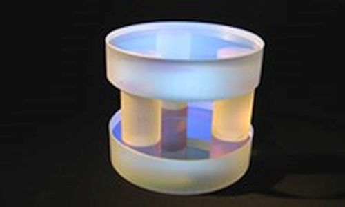

Where to Buy Fabry-Perot Interferometers
Definition: interferometers consisting of two highly reflecting mirrors, forming a standing-wave resonator
See also our encyclopedia article on Fabry-Perot interferometers!
Related products: etalons, interferometers
14 suppliers for Fabry-Perot interferometers are listed in the RP Photonics Buyer's Guide. Both manufacturers and distributors can be registered.
| Suppliers with Ad Package | |
|---|---|
| Company | Product Description |
 80 Colonnade Rd. North, Unit 1 Nepean, Ontario K2E 7L2 Canada |  LightMachinery manufactures the world's finest solid and air spaced etalons. Our fluid jet polishing systems allow us to routinely create surfaces that are better than λ/100 peak to valley. Solid etalons, air spaced etalons, piezo tunable etalons, Gires–Tournois etalons – LightMachinery has extensive expertise in the manufacturing and testing of all kinds of Fabry–Pérot etalons from 1 mm square to 100 mm in diameter. These devices require high quality, very flat optical surfaces and extreme parallelism to achieve high performance, making them a good match for the polishing and metrology at LightMachinery. |
| Your products are not listed here? Get an ad package! | |
| All Suppliers | |
|---|---|
5733 Central Avenue Boulder, CO 80301 United States | |
7647 Main Street Fishers Victor, NY 14564 United States | www.bristol-inst.com Tel.: +1 585 924 2620 |
357 rue Franquet Quebec, QC G1P 4N7 Canada | |
7742B Gloria Ave. Van Nuys CA 91406 United States | |
 21 rue de Broglie 22300 Lannion France | |
Argelsrieder Feld 14 82234 Wessling Germany | |
80 Colonnade Rd. North, Unit 1 Nepean, Ontario K2E 7L2 Canada | LightMachinery manufactures the world's finest solid and air spaced etalons. Our fluid jet polishing systems allow us to routinely create surfaces that are better than λ/100 peak to valley. Solid etalons, air spaced etalons, piezo tunable etalons, Gires–Tournois etalons – LightMachinery has extensive expertise in the manufacturing and testing of all kinds of Fabry–Pérot etalons from 1 mm square to 100 mm in diameter. These devices require high quality, very flat optical surfaces and extreme parallelism to achieve high performance, making them a good match for the polishing and metrology at LightMachinery. |
1852 Century Place NE Atlanta, GA 30345 United States | |
5505 Airport Blvd. Boulder, CO 80301 United States | |
Tromode Industrial Estate Tromode, Isle of Man, IM4 4QD United Kingdom | |
4946 63rd Street, Suite B Boulder CO 80301 United States | |
1760 Grand Avenue Merrick, New York 11566 United States | |
 Lochhamer Schlag 19 82166 Gräfelfing Germany Quality: ISO 9001:2015 | www.toptica.com Social: Facebook, LinkedIn, YouTube E-mail: Tel.: +49 89 85 83 70 Fax: +49 89 85 83 72 00 |
Hans-Knoell-Str. 6 07745 Jena Germany | |
Click on a company entry to mark it. Product entries of suppliers having an ad package are displayed with a logo, product description and product image. | |
Users: if any displayed information is incorrect (e.g., a listed supplier does not offer such products) or legally problematic, please notify RP Photonics so that the problem can be solved.
Suppliers: you can report modified data using a form, which is provided via the button "Edit profile data" on your company profile page. You can obtain ad package for getting a much improved visibility and many more leads.
If you are a supplier and want to be listed, please use the registration form.
An already registered supplier can use a customized form to report the full list of offered photonics products. That form is reachable with a link at the bottom of the supplier's profile page.
Anyone, not only suppliers themselves, can report additional suppliers. If possible, please provide a web address showing that this supplier indeed offers such products.
If you like this buyer's guide, share it with your friends and colleagues, e.g. via social media: